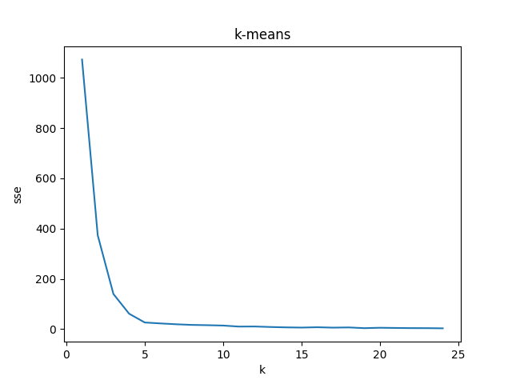
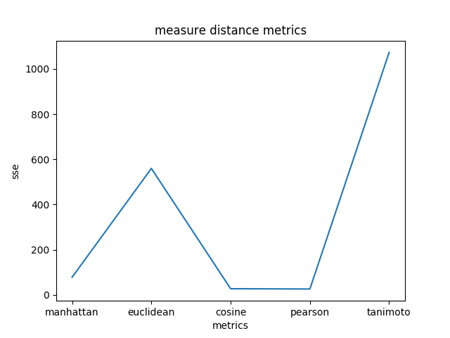
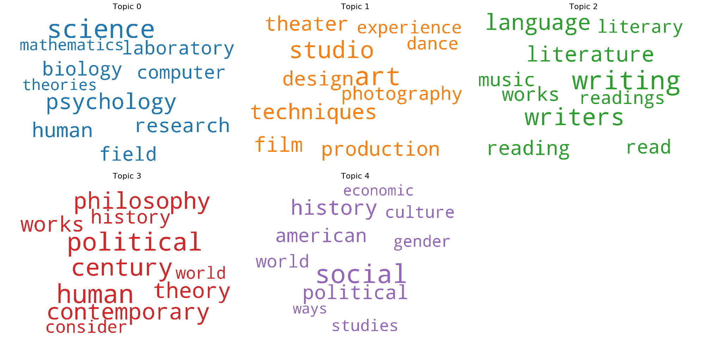
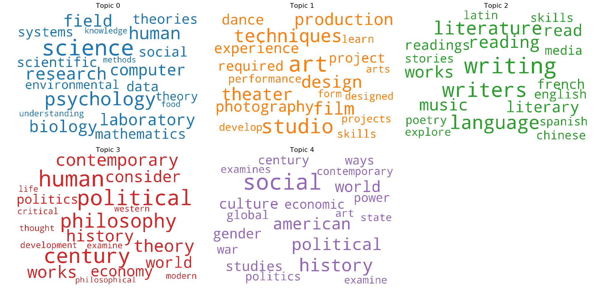
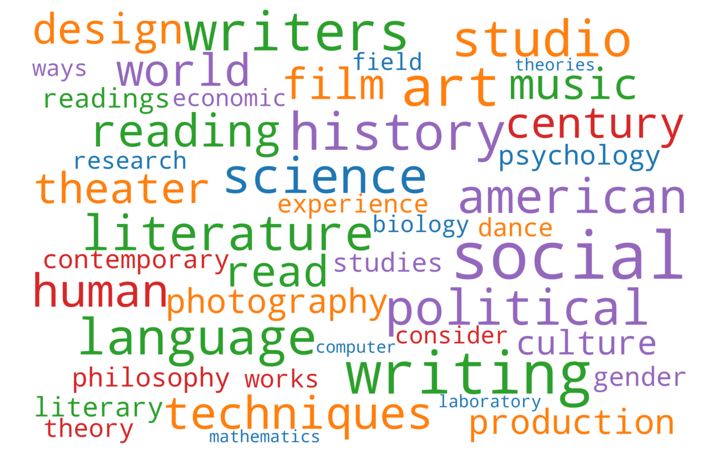
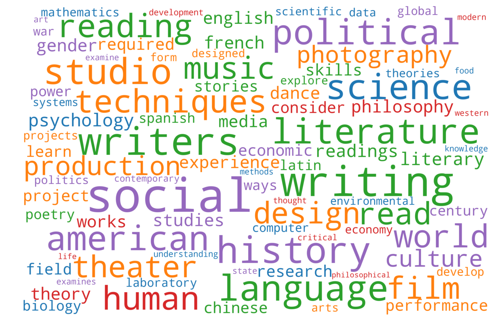
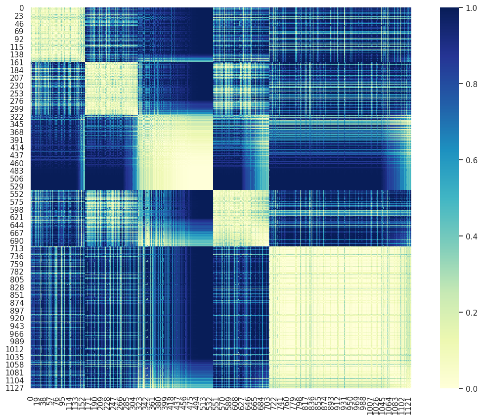
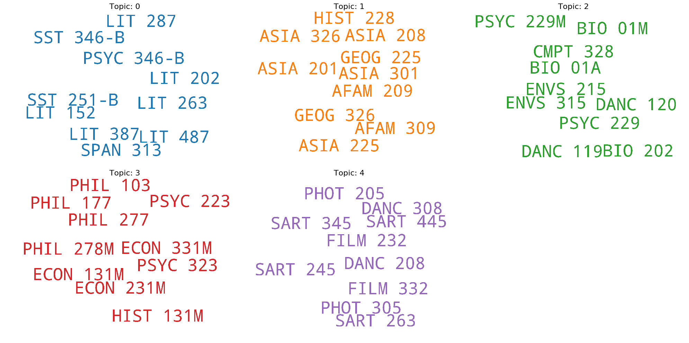
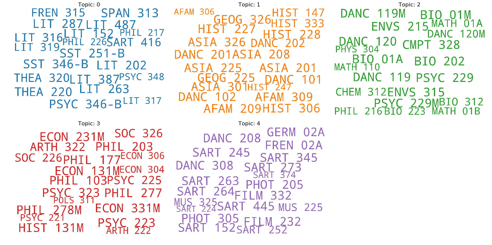
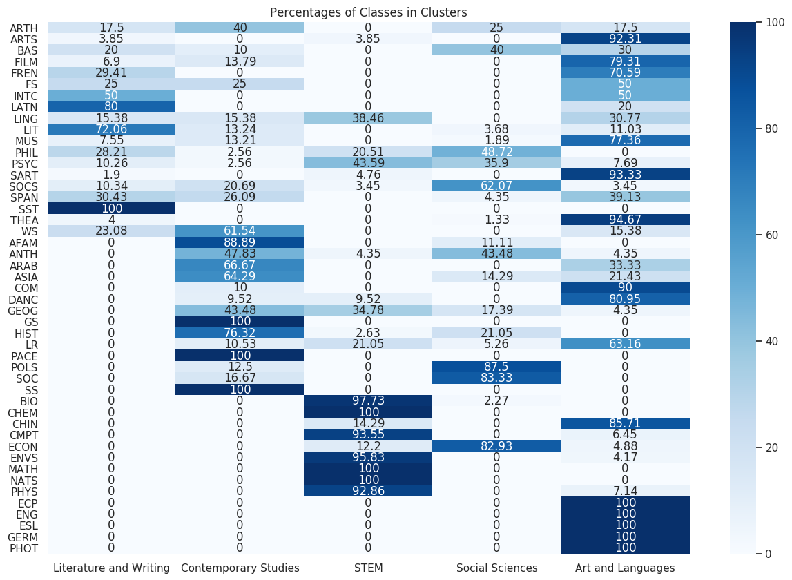

Thanks to Vikash Singh's semi-supervised guided topic model.
Step 1: Find topic model
Step 2: Normalize values (topic document numbers from model are extremely small floats)
Step 3: K-means clustering


Results: Documents and Class Clusters
Documents:




Distance Matrix 
Classes


Analysis:
